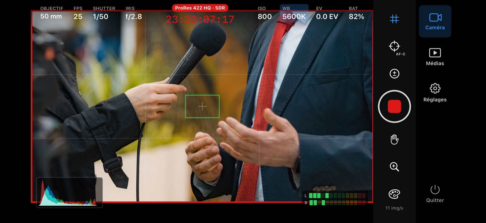
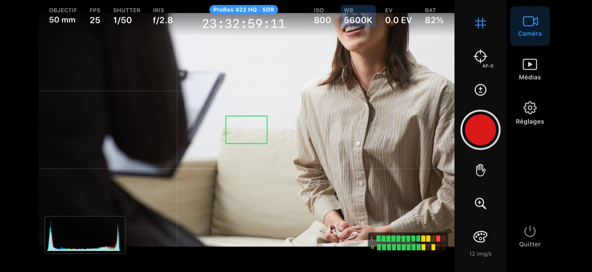
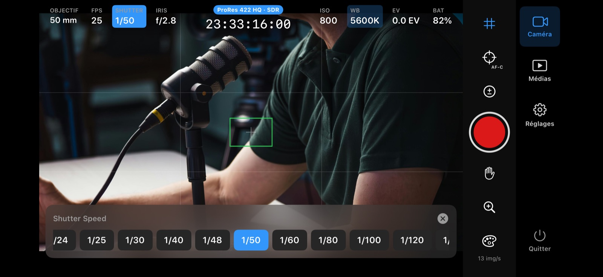
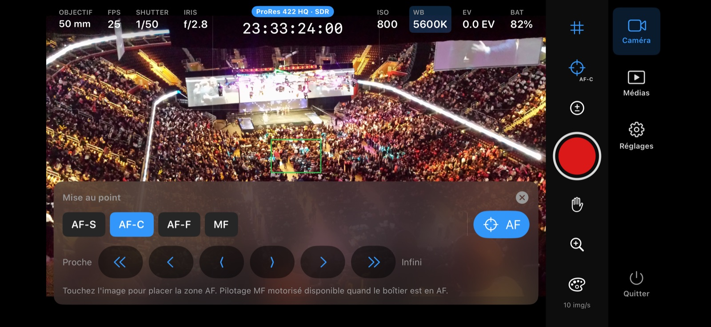
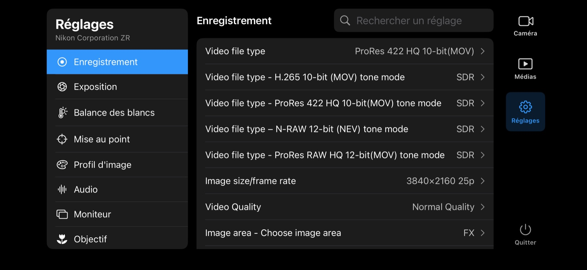

Votre hybride Z, piloté depuis l'iPhone.
Retour image en direct, enregistrement à distance et tous les réglages de votre appareil, en USB-C ou en Wi-Fi.

Un moniteur et une télécommande, sans câble HDMI.
Control Z s'appuie sur le protocole de contrôle documenté pour les boîtiers de la gamme Z. L'app lit les réglages directement sur votre appareil.
Retour image en direct
L'image de l'appareil en grand, avec focale, cadence, vitesse ou angle, iris, ISO, balance des blancs, exposition et batterie.
Enregistrement à distance
Démarrez et arrêtez l'enregistrement. L'app vérifie la carte et le mode, et affiche timecode, vu-mètres et histogramme.
Tous les menus
Codec, définition, cadence, N-Log, HLG, Picture Control, audio, menus perso… uniquement ceux de l'appareil connecté.
Mise au point au doigt
Touchez l'image pour placer la zone AF, choisissez AF-S, AF-C, AF-F ou MF, pilotez la mise au point motorisée.
Zoom motorisé
Avec un objectif à zoom motorisé : maintenez W ou T et réglez la vitesse.
Deux façons de se connecter
Câble USB-C direct, ou Wi-Fi avec détection automatique de l'appareil et appairage par code.




Boîtiers compatibles
Besoin d'aide ?
Les réponses aux questions les plus fréquentes. Si votre problème n'y figure pas, écrivez-nous (voir en bas de section).
Comment connecter mon appareil en USB-C ?
- Allumez l'appareil et reliez-le au port USB-C de l'iPhone ou de l'iPad avec un câble USB-C de données.
- Ouvrez Control Z : l'appareil apparaît dans la carte « USB-C ». Touchez-le.
- Au premier lancement, autorisez Control Z à contrôler l'appareil.
Comment connecter mon appareil en Wi-Fi ?
- Sur l'appareil : menu Réseau › Connexion à l'ordinateur › Paramètres réseau › Créer un profil. Choisissez votre réseau Wi-Fi (ou une connexion directe), puis activez la connexion.
- L'iPhone ou l'iPad doit être sur le même réseau Wi-Fi (pas un réseau invité, qui isole souvent les appareils).
- Dans Control Z, l'appareil apparaît dans la carte « Wi-Fi » avec la mention « Appairage requis ». Touchez « Appairer ».
- Vérifiez que le code affiché dans l'app est le même que sur l'écran de l'appareil, touchez « Le code est identique », puis validez sur l'appareil.
- L'app se reconnecte automatiquement quelques secondes plus tard. Les fois suivantes, touchez simplement « Connecter ».
« Connexion refusée par l'appareil (code 1) »
L'app ne trouve pas l'appareil sur le réseau
- Vérifiez dans Réglages iOS › Confidentialité et sécurité › Réseau local que Control Z est autorisé.
- Vérifiez que la connexion est active sur l'appareil et que les deux sont sur le même réseau.
- Vous pouvez aussi saisir l'adresse IP de l'appareil dans « Adresse IP manuelle » (elle figure dans les informations du profil réseau, sur l'appareil).
Pourquoi le retour image n'est-il pas en Full HD ?
L'enregistrement ne démarre pas
Certains réglages n'apparaissent pas
Puis-je essayer l'app sans appareil ?
Politique de confidentialité
Dernière mise à jour : 14 novembre 2026
Communications
L'app échange uniquement avec l'appareil photo que vous connectez : par câble USB-C, ou en Wi-Fi sur votre réseau local (protocole PTP/IP). Elle ne se connecte à aucun serveur sur Internet.
Autorisations demandées
- Contrôle des appareils photo (USB) : nécessaire pour piloter l'appareil branché en USB-C.
- Réseau local : nécessaire pour détecter et piloter l'appareil en Wi-Fi.
Données stockées sur votre iPhone ou iPad
- Un identifiant d'appairage généré aléatoirement à l'installation, utilisé par l'appareil photo pour reconnaître votre iPhone ou iPad.
- La dernière adresse IP saisie manuellement, le cas échéant.
Ces données restent sur votre appareil et sont supprimées avec l'app.
Images et fichiers
Le retour image et les vignettes de la carte mémoire sont affichés en direct et ne sont ni enregistrés ni transmis ailleurs. Les fichiers restent sur la carte de votre appareil photo.
Ce que l'app ne fait pas
- Aucun compte, aucune publicité.
- Aucun outil de statistiques, de suivi ou de mesure d'audience.
- Aucune donnée vendue ou partagée avec des tiers.
Enfants
L'app ne collecte aucune donnée, y compris auprès des enfants.
Contact
Pour toute question sur cette politique : GitHub ou la page App Store de l'app › « Assistance de l'app ».
Support & privacy
Support
- USB-C: turn the camera on, connect it to the iPhone or iPad with a USB-C data cable, then tap it in the “USB-C” card and allow Control Z to control the camera.
- Wi-Fi: on the camera, open Network › Connect to computer › Network settings › Create profile, join your Wi-Fi network (or use a direct connection) and enable the connection. In Control Z, tap “Appairer” (Pair), check that the code matches the camera screen, then confirm on the camera. The app reconnects automatically.
- “Connection refused (code 1)”: each camera network profile can be paired with only one device. Create a new profile dedicated to your iPhone or iPad.
- Camera not found: allow Control Z in iOS Settings › Privacy & Security › Local Network, and make sure both devices are on the same network.
- Live view resolution: the camera control protocol provides live view up to 1024 × 768 pixels.
- No camera? Tap “Mode démo” on the home screen to try the app with a simulated camera.
Contact: open an issue on GitHub, or use “App Support” on the App Store page.
Privacy policy
Last updated: November 14, 2026
Control Z does not collect any personal data. The app only communicates with your camera, over USB-C or your local network, and never connects to Internet servers. It requests camera-control (USB) and Local Network permissions solely to control your camera. A random pairing identifier and the last manually entered IP address are stored on your device only and are deleted with the app. Live view images and card thumbnails are displayed in real time and are neither saved nor sent anywhere. No account, no ads, no analytics, no tracking, no data shared with third parties.